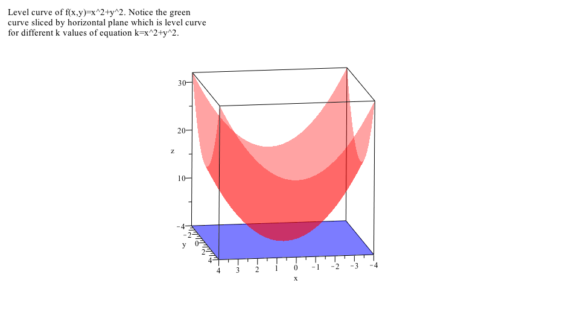
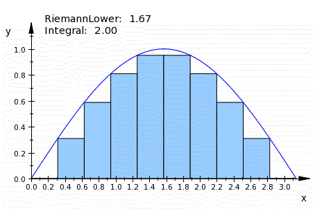

flowchart LR A["Contextualize<br/>the problem"] --> B["Decompose into<br/>first principles"] B --> C["Choose representations<br/>and tools"] C --> D["Structured<br/>practice"] D --> E["Feedback and<br/>reflection"] E --> F["Transfer to<br/>unfamiliar problems"]
Teaching
I have a keen interest in designing programs that integrate technology—such as Clickers, Virtual Reality, and AI assistants—to promote active and experiential learning. I hold a Certificate in University Teaching from the University of Waterloo.
My interest focus on designing classroom activities that foster resilience, empathy, and first principle problem solving thinking in students—critical skills for success in an ever-evolving workplace environment.
Please refer to my Teaching Dossier for a comprehensive overview of my teaching philosophy and educational methods.
Teaching Design Workflow
My teaching design follows the same principle as my professional work: begin by contextualizing the problem, identify the abstractions students need, and use technology only where it sharpens reasoning rather than replacing it.
This workflow informs how I use clickers, visual demonstrations, and AI assistants in the classroom: the tools support contextualization, but the teaching objective remains durable problem solving and transfer.
Building on my industry experience and university teaching background, I aim to create a course on both core and elective topics like:
Core Courses: Linear Algebra, Calculus, Optimization, Machine Learning, Deep Learning, Natural Language Processing, Data Visualization.
Elective Courses or Bridge Courses:
Elements of Forward-Deployed Engineer. This course will provide a structured framework for developing innovative solutions to real-world business challenges. Course Outline1
Field Study in the History of Indian Mathematics. This course uses structured library reading, informational interviews with experts and historians, and collaborative report writing to study mathematical developments associated with Nalanda University and the Gupta Empire. Course Outline2
Teaching Roles
Visiting Lecturer
- BRIDGE School of Management, India in collaboration with Northwestern University, USA:
- Course: Introduction to machine learning and advance modeling methods
University Teaching
At the University of Waterloo, I worked as a teaching assistant and sessional lecturer. I taught following courses in the Department of Applied Mathematics at the University of Waterloo:
Calculus III for Honours Mathematics
Calculus I for Engineers
Calculus II for Sciences
Selected Courses where I worked as a Teaching Assistant:
Computational Cell Biology (Graduate Course)
Environmental Informatics (Graduate Course)
Calculus I, II, III for Engineers
Introduction to differential equations
Linear Algebra I
Calculus I, II, III for Honours Mathematics
Teaching Research
- Rahul (2012). A Survey of Wiki Based Collaborative Learning Environments for the Interdisciplinary Training of the Students in Maths and Biology. [Poster presentation]. Opportunities and New Directions Conference, Centre of Teaching Excellence, University of Waterloo, Waterloo, Canada
- CTE Dissertation title: Wiki as a Teaching Tool for the Systems Biology Class.
Teaching Demonstrations
Please find different visual presentations, which I developed in MUPAD (MATLAB’s symbolic interface.) on my Github repository: https://github.com/r2rahul/teachingdemo
Reference: Crouch, Catherine, Adam P. Fagen, J. Paul Callan, and Eric Mazur. “Classroom Demonstrations: Learning Tools or Entertainment?” American Journal of Physics 72, no. 6 (June 1, 2004): 835–38.


Other Teaching Resources: Teaching Demonstrations and Materials
Teaching Resources
Educational Tools
Tools that I frequently used while teaching:
Interactive White Board Software Open Board (formerly Open Sankore:) https://openboard.ch/download.en.html
Audience Response System, iClicker: http://www1.iclicker.com/
Yed Graph editor tool used to build Concept Maps: http://www.yworks.com/en/products_yed_about.html
Massive Open Online Courses (MOOC):
EDUC115N How to Learn Math: https://class.stanford.edu/courses/Education/EDUC115N/How_to_Learn_Math/about
EDUC115-S How to Learn Math: For Students: https://class.stanford.edu/courses/Education/EDUC115-S/Spring2014/about
Effective Thinking Through Mathematics: https://www.edx.org/course/utaustinx/utaustinx-ut-9-01x-effective-thinking-1178#.VCnfG_ldV-4
Introduction to Mathematical Thinking: https://www.coursera.org/course/maththink
Learning How to Learn: https://www.coursera.org/course/learning
Teaching College-Level Science and Engineering: http://ocw.mit.edu/courses/chemistry/5-95j-teaching-college-level-science-and-engineering-spring-2009/
Articles and Books
Shors, Tracey J. “Saving New Brain Cells.” Scientific American 300, no. 3 (March 1, 2009): 46–54.
Polya, G. How to Solve It: A New Aspect of Mathematical Method. Princeton University Press, 2014.
Lockhart, Paul. A Mathematician’s Lament. Bellevue Literary Press, 2009.
Burger, Edward B., and Michael Starbird. The 5 Elements of Effective Thinking. Princeton University Press, 2012.
Dweck, Carol. Mindset: The New Psychology of Success. Random House Publishing Group, 2006.
Wilder, R. L. “The Role of Intuition.” Science 156, no. 3775 (May 5, 1967): 605–10.
Devlin, Keith J. Introduction to Mathematical Thinking. Keith Devlin, 2012.
Eric Mazur, “The Problem with Problems,” Optics & Photonics News 7(6), 59-60 (1996)
Norman, Marie K. How Learning Works: Seven Research-Based Principles for Smart Teaching. 1 edition. San Francisco, CA: Jossey-Bass, 2010.
Center for Teaching Excellence at the University of Waterloo has great resources for teaching with technology and other useful articles: https://uwaterloo.ca/centre-for-teaching-excellence/resources/educational-technologies